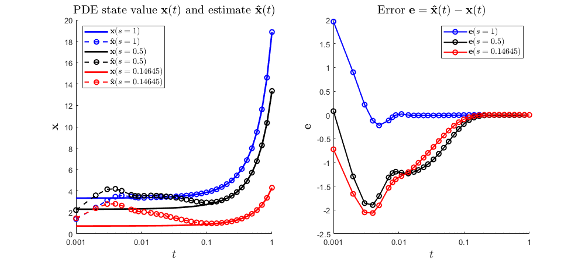

Contents
- - - - - - - - - - - - - - - - - - - - - - - - - - - - - - - - - - - - %%
- - - - - - - - - - - - - - - - - - - - - - - - - - - - - - - - - - - - %%
- - - - - - - - - - - - - - - - - - - - - - - - - - - - - - - - - - - - %%
- - - - - - - - - - - - - - - - - - - - - - - - - - - - - - - - - - - - %%
- - - - - - - - - - - - - - - - - - - - - - - - - - - - - - - - - - - - %%
% DEMO5_Hinf_optimal_estimator.m % See Chapter 11.5 of the manual for a description. % % This document illustrates how an Hinfty optimal estimator can be designed % for a PIE, and how the estimated state can be simulated. % % We consider the system defined by: % PDE: \dot{x}(t,s) = (d^2/ds^2) x(t,s) + lam x(t,s) + w(t), s in [0,1]; % Outputs: z(t) = int_{0}^{1} x(t,s) ds + w(t); % y(t) = x(t,1); % BCs: 0 = x(t,0) = x_{s}(t,1); % (unstable for lam > pi^2/4 = 2.4674) % % Letting v:=(d^2/ds^2)x, We derive an equivalent PIE of the form: % [T \dot{v}](t,s) = [A v](t,s) + [B1 w](t,s); % z(t) = [C1 v](t) + [D11 w](t); % y(t) = [C2 v](t) + [D21 w](t); % % So that x = T*v. We design an estimator of the form: % [T \dot{vhat}](t,s) = [A vhat](t,s) + [L(yhat-y)](t,s); % zhat(t) = [C1 vhat](t) % yhat(t) = [C2 vhat](t) % % Using this estimator, the errors e=(vhat-v) and ztilde = (zhat-z) satisfy % [T \dot{e}](t,s) = [(A+L*C2) e](t,s) - [(B1+L*D21) w](t,s); % ztilde(t) = [C1 e](t) - [D11 w](t); % % We wish to compute an operator L that minimizes the L2 gain from % disturbances w to error ztilde in the output. This is achieved solving % the LPI % % min_{gam,P,Z} gam % s.t. P>=0 % [-gam*I, -D11', -(P*B1+Z*D21)'*T ]=: Q <=0 % [-D11, -gam*I, C1 ] % [-T'*(P*B1+Z*D21), C1', (P*A+Z*C2)'*T+T'*(P*A+Z*C2)] % % Then, using L = P^{-1}*Z, the L2 gain satisfied % ||ztilde||_{L2}/||w||_{L2} <= gam % % We manually declare this LPI here, but it can also be solved using the % "PIETOOLS_Hinf_estimator" executive file. % We simulate the PDE state x and estimated state xhat using PIESIM. %
clc; clear; close all; echo on %%%%%%%%%%%%%%%%%% Start Code Snippet %%%%%%%%%%%%%%%%%%
- - - - - - - - - - - - - - - - - - - - - - - - - - - - - - - - - - - %%
% % Declare the PDE, and convert it to a PIE. Declare the PDE using command line parser
pvar s t % Initialize polynomial variables t (time) and s (space) lam = 4; % Set reaction parameter PDE = sys(); % Initialize the PDE structure x = state('pde'); w = state('in'); % Initialize PDE state x and disturbance w y = state('out'); z = state('out'); % Initialize outputs y and z eqs = [diff(x,t) == diff(x,s,2) + lam*x + w; % define the PDE equation z == int(x,s,[0,1]) + w; % define the regulated output equation y == subs(x,s,1); % define the observed output equation subs(x,s,0) == 0; % define the first boundary condition subs(diff(x,s),s,1) == 0]; % define the second boundary condition PDE = addequation(PDE,eqs); % Add the equations to the PDE structure PDE = setObserve(PDE,y); % Set y as an observed output display_PDE(PDE); % Display the system in the command window % Compute the associated PIE. PIE = convert(PDE,'pie'); PIE = PIE.params; % Extract the PI operators defining the PIE. T = PIE.T; A = PIE.A; C1 = PIE.C1; C2 = PIE.C2; B1 = PIE.B1; D11 = PIE.D11; D21 = PIE.D21; % A PIE with state v, disturbance w, regulated output z, and observed % output y, with no disturbance in the BCs, has the structure % T * dot{v}(t) = A*v(t) + B1*w(t) % z(t) = C1*v(t) + D11*w(t) % y(t) = C2*v(t) + D12*w(t)
%%%%%%%%%%%%%%%%%% Start Code Snippet %%%%%%%%%%%%%%%%%%
%% - - - - - - - - - - - - - - - - - - - - - - - - - - - - - - - - - - - %%
% % % Declare the PDE, and convert it to a PIE.
% Declare the PDE using command line parser
pvar s t % Initialize polynomial variables t (time) and s (space)
lam = 4; % Set reaction parameter
PDE = sys(); % Initialize the PDE structure
Initialized sys() object of type "pde"
x = state('pde'); w = state('in'); % Initialize PDE state x and disturbance w
y = state('out'); z = state('out'); % Initialize outputs y and z
eqs = [diff(x,t) == diff(x,s,2) + lam*x + w; % define the PDE equation
z == int(x,s,[0,1]) + w; % define the regulated output equation
y == subs(x,s,1); % define the observed output equation
subs(x,s,0) == 0; % define the first boundary condition
subs(diff(x,s),s,1) == 0]; % define the second boundary condition
PDE = addequation(PDE,eqs); % Add the equations to the PDE structure
5 equations were added to sys() object
PDE = setObserve(PDE,y); % Set y as an observed output
1 outputs were designated as observed outputs
display_PDE(PDE); % Display the system in the command window
∂ₜ x(t,s) = ∂²ₛ x(t,s) + 4 * x(t,s) + w(t);
y(t) = x(t,1);
z(t) = ₀∫¹[x(t,s)]ds + w(t);
0 = - x(t,0);
0 = - ∂ₛ x(t,1);
% Compute the associated PIE.
PIE = convert(PDE,'pie'); PIE = PIE.params;
--- Reordering the state components to allow for representation as PIE ---
--- Converting ODE-PDE to PIE ---
Initialized sys() object of type "pde"
Conversion to pie was successful
% Extract the PI operators defining the PIE.
T = PIE.T;
A = PIE.A; C1 = PIE.C1; C2 = PIE.C2;
B1 = PIE.B1; D11 = PIE.D11; D21 = PIE.D21;
- - - - - - - - - - - - - - - - - - - - - - - - - - - - - - - - - - - %%
% % Compute an optimal observer operator L for the PIE.
use_executive = false; % <-- set to true to use predefined executive if use_executive % % Use the predefined Hinf estimator executive function. % Declare settings to use: choose from % extreme < stripped < light < heavy < veryheavy or custom % Heavier settings may increase accuracy, but also computation time. settings = lpisettings('heavy'); % Call the Hinf estimator executive: % Returns a solved LPI program structure, an optimal observer operator % Lval, and a bound gam_val on the L2-gain ||zhat-z||/||w|| for the % associated estimator. [prog, Lval, gam_val] = PIETOOLS_Hinf_estimator(PIE, settings); else % % Manually construct and solve the LPI program for optimal % % estimator synthesis. % Initialize the LPI program vars = PIE.vars(:); % Extract the spatial variables prog = sosprogram(vars); % Initialize an LPI program structure in the considered spatial variables % Declare the decision variable gamma dpvar gam; prog = sosdecvar(prog, gam); % Declare a positive semidefinite PI operator decision variable P>=0 Pdim = T.dim(:,1); % Row dimensions of the operator P Pdom = PIE.dom; % Spatial domain of the operator P Pdeg = {6,[2,3,5],[2,3,5]}; % Degrees of monomials used to define P (call "help poslpivar" for more info) opts.sep = 1; % Set P.R.R1=P.R.R2 to reduce computational complexity [prog,P] = poslpivar(prog,Pdim,Pdom,Pdeg,opts); %eppos = 1e-6; %P.R.R0 = P.R.R0 + eppos*eye(size(P)); % Declare the indefinite PI operator decision variable Z Zdim = C2.dim(:,[2,1]); % Row and column dimensions of the operator Z Zdom = PIE.dom; % Spatial domain of the operator Z Zdeg = [4,0,0]; % Degrees of monomials defining Z (call "help lpivar" for more info) [prog,Z] = lpivar(prog,Zdim,Zdom,Zdeg); % Declare the LPI constraint Q<=0. nw = size(B1,2); nz = size(C1,1); Q = [-gam*eye(nw), -D11', -(P*B1+Z*D21)'*T; -D11, -gam*eye(nz), C1; -T'*(P*B1+Z*D21), C1', (P*A+Z*C2)'*T+T'*(P*A+Z*C2)]; prog = lpi_ineq(prog,-Q); % Add the constraint -Q>=0 to the LPI program % Set the objective function: minimize gam prog = sossetobj(prog, gam); % Solve the optimization program opts.solver = 'sedumi'; % Use SeDuMi to solve the SDP opts.simplify = true; % Simplify the SDP before solving prog_sol = sossolve(prog,opts); % Extract the solved value of gam and the operators P and Z gam_val = sosgetsol(prog_sol,gam); Pval = getsol_lpivar(prog_sol,P); Zval = getsol_lpivar(prog_sol,Z); % Build the optimal observer operator L. Lval = getObserver(Pval,Zval); end
% A PIE with state v, disturbance w, regulated output z, and observed
% output y, with no disturbance in the BCs, has the structure
% T * dot{v}(t) = A*v(t) + B1*w(t)
% z(t) = C1*v(t) + D11*w(t)
% y(t) = C2*v(t) + D12*w(t)
%% - - - - - - - - - - - - - - - - - - - - - - - - - - - - - - - - - - - %%
% % % Compute an optimal observer operator L for the PIE.
use_executive = false; % <-- set to true to use predefined executive
if use_executive
else
% % Manually construct and solve the LPI program for optimal
% % estimator synthesis.
% Initialize the LPI program
vars = PIE.vars(:); % Extract the spatial variables
prog = sosprogram(vars); % Initialize an LPI program structure in the considered spatial variables
% Declare the decision variable gamma
dpvar gam;
prog = sosdecvar(prog, gam);
% Declare a positive semidefinite PI operator decision variable P>=0
Pdim = T.dim(:,1); % Row dimensions of the operator P
Pdom = PIE.dom; % Spatial domain of the operator P
Pdeg = {6,[2,3,5],[2,3,5]}; % Degrees of monomials used to define P (call "help poslpivar" for more info)
opts.sep = 1; % Set P.R.R1=P.R.R2 to reduce computational complexity
[prog,P] = poslpivar(prog,Pdim,Pdom,Pdeg,opts);
%eppos = 1e-6;
%P.R.R0 = P.R.R0 + eppos*eye(size(P));
% Declare the indefinite PI operator decision variable Z
Zdim = C2.dim(:,[2,1]); % Row and column dimensions of the operator Z
Zdom = PIE.dom; % Spatial domain of the operator Z
Zdeg = [4,0,0]; % Degrees of monomials defining Z (call "help lpivar" for more info)
[prog,Z] = lpivar(prog,Zdim,Zdom,Zdeg);
% Declare the LPI constraint Q<=0.
nw = size(B1,2); nz = size(C1,1);
Q = [-gam*eye(nw), -D11', -(P*B1+Z*D21)'*T;
-D11, -gam*eye(nz), C1;
-T'*(P*B1+Z*D21), C1', (P*A+Z*C2)'*T+T'*(P*A+Z*C2)];
prog = lpi_ineq(prog,-Q); % Add the constraint -Q>=0 to the LPI program
% Set the objective function: minimize gam
prog = sossetobj(prog, gam);
% Solve the optimization program
opts.solver = 'sedumi'; % Use SeDuMi to solve the SDP
opts.simplify = true; % Simplify the SDP before solving
prog_sol = sossolve(prog,opts);
Running simplification process:
Old A size: 20248 673
New A size: 19967 672
Size: 19967 672
SeDuMi 1.3 by AdvOL, 2005-2008 and Jos F. Sturm, 1998-2003.
Alg = 2: xz-corrector, Adaptive Step-Differentiation, theta = 0.250, beta = 0.500
Put 6 free variables in a quadratic cone
eqs m = 672, order n = 162, dim = 19969, blocks = 4
nnz(A) = 52030 + 0, nnz(ADA) = 451584, nnz(L) = 226128
it : b*y gap delta rate t/tP* t/tD* feas cg cg prec
0 : 8.45E+00 0.000
1 : 1.58E+00 2.21E+00 0.000 0.2614 0.9000 0.9000 0.51 1 1 2.3E+01
2 : 1.33E+00 7.15E-01 0.000 0.3234 0.9000 0.9000 1.11 1 1 6.7E+00
3 : 1.24E+00 2.05E-01 0.000 0.2872 0.9000 0.9000 1.12 1 1 1.9E+00
4 : 1.17E+00 5.99E-02 0.000 0.2917 0.9000 0.9000 1.05 1 1 5.3E-01
5 : 1.11E+00 1.91E-02 0.000 0.3197 0.9000 0.9000 0.86 1 1 2.0E-01
6 : 1.08E+00 7.23E-03 0.000 0.3779 0.9000 0.9000 0.78 1 1 8.9E-02
7 : 1.06E+00 2.72E-03 0.000 0.3767 0.9000 0.9000 0.81 1 1 3.9E-02
8 : 1.05E+00 1.26E-03 0.000 0.4636 0.9000 0.9000 0.64 1 1 2.4E-02
9 : 1.04E+00 5.31E-04 0.000 0.4208 0.9000 0.9000 0.77 1 1 1.2E-02
10 : 1.03E+00 2.49E-04 0.000 0.4687 0.9000 0.9000 0.45 1 1 8.0E-03
11 : 1.02E+00 9.93E-05 0.000 0.3985 0.9000 0.9000 0.71 1 1 3.7E-03
12 : 1.02E+00 4.35E-05 0.000 0.4382 0.9000 0.9000 0.46 1 1 2.3E-03
13 : 1.01E+00 1.73E-05 0.000 0.3987 0.9000 0.9000 0.68 1 2 1.1E-03
14 : 1.01E+00 7.81E-06 0.000 0.4502 0.9000 0.9000 0.47 1 2 7.1E-04
15 : 1.01E+00 3.11E-06 0.000 0.3989 0.9000 0.9000 0.69 2 2 3.3E-04
16 : 1.01E+00 9.79E-07 0.000 0.3144 0.9000 0.0000 0.45 2 3 2.2E-04
17 : 1.01E+00 2.89E-07 0.000 0.2957 0.9098 0.9000 0.35 2 2 8.2E-05
18 : 1.01E+00 8.63E-08 0.000 0.2983 0.9000 0.0000 0.10 4 4 5.4E-05
19 : 1.00E+00 2.38E-08 0.000 0.2758 0.9095 0.9000 0.02 4 5 1.9E-05
Run into numerical problems.
iter seconds digits c*x b*y
19 5.0 3.1 1.0035251762e+00 1.0043628463e+00
|Ax-b| = 2.7e-05, [Ay-c]_+ = 1.6E-06, |x|= 1.3e+03, |y|= 7.0e+03
Detailed timing (sec)
Pre IPM Post
4.700E-02 4.413E+00 0.000E+00
Max-norms: ||b||=1, ||c|| = 1,
Cholesky |add|=0, |skip| = 335, ||L.L|| = 1.5284e+07.
Residual norm: 2.6731e-05
iter: 19
feasratio: 0.0232
pinf: 0
dinf: 0
numerr: 1
timing: [0.0470 4.4130 0]
wallsec: 4.4600
cpusec: 5.0938
% Extract the solved value of gam and the operators P and Z
gam_val = sosgetsol(prog_sol,gam);
Pval = getsol_lpivar(prog_sol,P);
Zval = getsol_lpivar(prog_sol,Z);
% Build the optimal observer operator L.
Lval = getObserver(Pval,Zval);
end
- - - - - - - - - - - - - - - - - - - - - - - - - - - - - - - - - - - %%
% % Build a PIE modeling the actual state v, and estimated state vhat: [T, 0] [\dot{v}(t) ] = [A, 0 ] [v(t) ] + [B1 ] w(t) [0, T] [\dot{vhat}(t)] [-L*C2, A+L*C2] [vhat(t)] + [L*D21]
[z(t) ] = [C1, 0 ] [v ] + [D11] w(t)
[zhat(t)] [0, C1] [vhat] [0 ]This PIE has the form T_CL * \dot{V}(t) = A_CL * V(t) + B_CL * w(t) Z(t) = C_CL * V(t) + D_CL * w(t)
where V = [v; vhat] and Z = [z; zhat].
% Construct the operators defining the PIE. T_CL = [T, 0*T; 0*T, T]; % use 0*T to define zero-operaotr of same dimensions as T A_CL = [A, 0*A; -Lval*C2, A+Lval*C2]; B_CL = [B1; Lval*D21]; C_CL = [C1, 0*C1; 0*C1, C1]; D_CL = [D11; 0*D11]; % Declare the PIE. PIE_CL = pie_struct(); % Initialize the PIE structure PIE_CL.vars = PIE.vars; % Set the spatial variables of the PIE PIE_CL.dom = PIE.dom; % Set the domain of the spatial variables PIE_CL.T = T_CL; % Declare the operator T PIE_CL.A = A_CL; PIE_CL.B1 = B_CL; % Declare the operators A and B1 PIE_CL.C1 = C_CL; PIE_CL.D11 = D_CL; % Declare the operators C1 and D11 PIE_CL = initialize(PIE_CL); % Fill in all the blanks in the PIE structure
%% - - - - - - - - - - - - - - - - - - - - - - - - - - - - - - - - - - - %%
% % % Build a PIE modeling the actual state v, and estimated state vhat:
% [T, 0] [\dot{v}(t) ] = [A, 0 ] [v(t) ] + [B1 ] w(t)
% [0, T] [\dot{vhat}(t)] [-L*C2, A+L*C2] [vhat(t)] + [L*D21]
%
% [z(t) ] = [C1, 0 ] [v ] + [D11] w(t)
% [zhat(t)] [0, C1] [vhat] [0 ]
%
% This PIE has the form
% T_CL * \dot{V}(t) = A_CL * V(t) + B_CL * w(t)
% Z(t) = C_CL * V(t) + D_CL * w(t)
%
% where V = [v; vhat] and Z = [z; zhat].
% Construct the operators defining the PIE.
T_CL = [T, 0*T; 0*T, T]; % use 0*T to define zero-operaotr of same dimensions as T
A_CL = [A, 0*A; -Lval*C2, A+Lval*C2]; B_CL = [B1; Lval*D21];
C_CL = [C1, 0*C1; 0*C1, C1]; D_CL = [D11; 0*D11];
% Declare the PIE.
PIE_CL = pie_struct(); % Initialize the PIE structure
PIE_CL.vars = PIE.vars; % Set the spatial variables of the PIE
PIE_CL.dom = PIE.dom; % Set the domain of the spatial variables
PIE_CL.T = T_CL; % Declare the operator T
PIE_CL.A = A_CL; PIE_CL.B1 = B_CL; % Declare the operators A and B1
PIE_CL.C1 = C_CL; PIE_CL.D11 = D_CL; % Declare the operators C1 and D11
PIE_CL = initialize(PIE_CL); % Fill in all the blanks in the PIE structure
- - - - - - - - - - - - - - - - - - - - - - - - - - - - - - - - - - - %%
% % Simulate and plot the actual and estimated PDE state using PIESIM
% Declare initial conditions for the state components of the PIE syms st sx real % Declare symbolix variables st (time) and sx (space) uinput.ic.PDE = [-10*sx; % Set the actual initial PIE state value 0]; % Set the estimated initial PIE state value % Declare the value of the disturbance w(t) uinput.w = 2*sin(pi*st); % Set options for the discretization and simulation: opts.plot = 'no'; % Do not plot the final solution opts.N = 8; % Expand using 8 Chebyshev polynomials opts.tf = 1; % Simulate up to t = 1; opts.dt = 1e-3; % Use time step of 10^-3 opts.intScheme=1; % Time-step using Backward Differentiation Formula (BDF) ndiff = [0,0,2]; % The PDE state involves 2 second order differentiable state variables % Simulate the solution to the PIE with estimator. [solution,grid] = PIESIM(PIE_CL,opts,uinput,ndiff); % Plot the solution at several grid points using the subroutine at the % bottom of this DEMO. grid_idcs = [1,5,7]; % Only plot at first, fifth and seventh grid points plot_figure_Hinf_optimal_estimator_DEMO(solution,grid,opts,grid_idcs)
%% - - - - - - - - - - - - - - - - - - - - - - - - - - - - - - - - - - - %%
% % % Simulate and plot the actual and estimated PDE state using PIESIM
% Declare initial conditions for the state components of the PIE
syms st sx real % Declare symbolix variables st (time) and sx (space)
uinput.ic.PDE = [-10*sx; % Set the actual initial PIE state value
0]; % Set the estimated initial PIE state value
% Declare the value of the disturbance w(t)
uinput.w = 2*sin(pi*st);
% Set options for the discretization and simulation:
opts.plot = 'no'; % Do not plot the final solution
opts.N = 8; % Expand using 8 Chebyshev polynomials
opts.tf = 1; % Simulate up to t = 1;
opts.dt = 1e-3; % Use time step of 10^-3
opts.intScheme=1; % Time-step using Backward Differentiation Formula (BDF)
ndiff = [0,0,2]; % The PDE state involves 2 second order differentiable state variables
% Simulate the solution to the PIE with estimator.
[solution,grid] = PIESIM(PIE_CL,opts,uinput,ndiff);
Warning: option Norder is not defined. Setting to a default value of 2
Solving PIE problem
Warning: control inputs are not defined. Defaulting to zero
Initial conditions on ODE states are not defined. Defaulting to 1
Too many initial conditions are defined. Ignoring extra conditions
Setting up Chebyshev matrices for the PIE system
Setup completed: integrating in time
Time integration scheme is numerically unstable for the given problem.
Try increasing time step to 2.610
or decreasing an order of the scheme (opts.Norder).
Value of a regulated output 1 at a final time 1.000000 is 12.0320
Value of a regulated output 2 at a final time 1.000000 is 12.0322
% Plot the solution at several grid points using the subroutine at the
% bottom of this DEMO.
grid_idcs = [1,5,7]; % Only plot at first, fifth and seventh grid points
plot_figure_Hinf_optimal_estimator_DEMO(solution,grid,opts,grid_idcs)
 %%%%%%%%%%%%%%%%%% End Code Snippet %%%%%%%%%%%%%%%%%% echo off
%% %%%%%%%%%%%%%%%%%% End Code Snippet %%%%%%%%%%%%%%%%%% echo off
- - - - - - - - - - - - - - - - - - - - - - - - - - - - - - - - - - - %%
function plot_figure_Hinf_optimal_estimator_DEMO(solution,grid,opts,grid_idcs) % % % Plot simulated values of actual state and estimated state at several % % % grid points, as specified by grid_idcs. % Extract actual and estimated solution at each time step. x_act = reshape(solution.timedep.pde(:,1,:),opts.N+1,[]); x_est = reshape(solution.timedep.pde(:,2,:),opts.N+1,[]); tval = solution.timedep.dtime; % Set options for the plot plot_indcs = floor(logspace(0,log(opts.tf/opts.dt)/log(10),40)); %plot_indcs = floor(linspace(1,opts.tf/opts.dt,66)); tplot = tval(plot_indcs); % Only plot at select times colors = {'b','g','m','r','k','c','r','y','o'}; % Colors for the plot % Plot evolution of actual and estimated fig1 = figure(1); for j=grid_idcs s_pos = num2str(grid.phys(j)); % Position associated to grid index. subplot(1,2,1) hold on plot(tplot,x_act(j,plot_indcs),[colors{j},'-'],'LineWidth',2,'DisplayName',['$\mathbf{x}(s=',s_pos,')$']); plot(tplot,x_est(j,plot_indcs),[colors{j},'o--'],'LineWidth',1.5,'DisplayName',['$\mathbf{\hat{x}}(s=',s_pos,')$']); hold off subplot(1,2,2) hold on loglog(tplot,(x_act(j,plot_indcs)-x_est(j,plot_indcs)),[colors{j},'o-'],'LineWidth',1.5,'DisplayName',['$\mathbf{e}(s=',s_pos,')$']); hold off end % Clean up the figure ax1 = subplot(1,2,1); ax1.XScale = 'log'; ax1.XTickLabels = {'0.001';'0.01';'0.1';'1'}; lgd1 = legend('Interpreter','latex'); lgd1.FontSize = 10.5; lgd1.Location = 'northwest'; xlabel('$t$','FontSize',15,'Interpreter','latex'); ylabel('$\mathbf{x}$','FontSize',15,'Interpreter','latex'); title('PDE state value $\mathbf{x}(t)$ and estimate $\mathbf{\hat{x}}(t)$','Interpreter','latex','FontSize',15); ax2 = subplot(1,2,2); ax2.XScale = 'log'; ax2.XTickLabels = {'0.001';'0.01';'0.1';'1'}; lgd2 = legend('Interpreter','latex'); lgd2.FontSize = 10.5; xlabel('$t$','FontSize',15,'Interpreter','latex'); ylabel('$\mathbf{e}$','FontSize',15,'Interpreter','latex'); title('Error $\mathbf{e}=\mathbf{\hat{x}}(t)-\mathbf{x}(t)$','Interpreter','latex','FontSize',15); fig1.Position = [700 600 1000 450]; end
%% - - - - - - - - - - - - - - - - - - - - - - - - - - - - - - - - - - - %%
function plot_figure_Hinf_optimal_estimator_DEMO(solution,grid,opts,grid_idcs)
% % % Plot simulated values of actual state and estimated state at several
% % % grid points, as specified by grid_idcs.
% Extract actual and estimated solution at each time step.
x_act = reshape(solution.timedep.pde(:,1,:),opts.N+1,[]);
x_est = reshape(solution.timedep.pde(:,2,:),opts.N+1,[]);
tval = solution.timedep.dtime;
% Set options for the plot
plot_indcs = floor(logspace(0,log(opts.tf/opts.dt)/log(10),40));
%plot_indcs = floor(linspace(1,opts.tf/opts.dt,66));
tplot = tval(plot_indcs); % Only plot at select times
colors = {'b','g','m','r','k','c','r','y','o'}; % Colors for the plot
% Plot evolution of actual and estimated
fig1 = figure(1);
for j=grid_idcs
s_pos = num2str(grid.phys(j)); % Position associated to grid index.
subplot(1,2,1)
hold on
plot(tplot,x_act(j,plot_indcs),[colors{j},'-'],'LineWidth',2,'DisplayName',['$\mathbf{x}(s=',s_pos,')$']);
plot(tplot,x_est(j,plot_indcs),[colors{j},'o--'],'LineWidth',1.5,'DisplayName',['$\mathbf{\hat{x}}(s=',s_pos,')$']);
hold off
subplot(1,2,2)
hold on
loglog(tplot,(x_act(j,plot_indcs)-x_est(j,plot_indcs)),[colors{j},'o-'],'LineWidth',1.5,'DisplayName',['$\mathbf{e}(s=',s_pos,')$']);
hold off
end
s_pos = num2str(grid.phys(j)); % Position associated to grid index.
subplot(1,2,1)
hold on
plot(tplot,x_act(j,plot_indcs),[colors{j},'-'],'LineWidth',2,'DisplayName',['$\mathbf{x}(s=',s_pos,')$']);
plot(tplot,x_est(j,plot_indcs),[colors{j},'o--'],'LineWidth',1.5,'DisplayName',['$\mathbf{\hat{x}}(s=',s_pos,')$']);
hold off
subplot(1,2,2)
hold on
loglog(tplot,(x_act(j,plot_indcs)-x_est(j,plot_indcs)),[colors{j},'o-'],'LineWidth',1.5,'DisplayName',['$\mathbf{e}(s=',s_pos,')$']);
hold off
end
s_pos = num2str(grid.phys(j)); % Position associated to grid index.
subplot(1,2,1)
hold on
plot(tplot,x_act(j,plot_indcs),[colors{j},'-'],'LineWidth',2,'DisplayName',['$\mathbf{x}(s=',s_pos,')$']);
plot(tplot,x_est(j,plot_indcs),[colors{j},'o--'],'LineWidth',1.5,'DisplayName',['$\mathbf{\hat{x}}(s=',s_pos,')$']);
hold off
subplot(1,2,2)
hold on
loglog(tplot,(x_act(j,plot_indcs)-x_est(j,plot_indcs)),[colors{j},'o-'],'LineWidth',1.5,'DisplayName',['$\mathbf{e}(s=',s_pos,')$']);
hold off
end
% Clean up the figure
ax1 = subplot(1,2,1); ax1.XScale = 'log'; ax1.XTickLabels = {'0.001';'0.01';'0.1';'1'};
lgd1 = legend('Interpreter','latex'); lgd1.FontSize = 10.5;
lgd1.Location = 'northwest';
xlabel('$t$','FontSize',15,'Interpreter','latex'); ylabel('$\mathbf{x}$','FontSize',15,'Interpreter','latex');
title('PDE state value $\mathbf{x}(t)$ and estimate $\mathbf{\hat{x}}(t)$','Interpreter','latex','FontSize',15);
ax2 = subplot(1,2,2); ax2.XScale = 'log'; ax2.XTickLabels = {'0.001';'0.01';'0.1';'1'};
lgd2 = legend('Interpreter','latex'); lgd2.FontSize = 10.5;
xlabel('$t$','FontSize',15,'Interpreter','latex'); ylabel('$\mathbf{e}$','FontSize',15,'Interpreter','latex');
title('Error $\mathbf{e}=\mathbf{\hat{x}}(t)-\mathbf{x}(t)$','Interpreter','latex','FontSize',15);
fig1.Position = [700 600 1000 450];
end